Quadrature Phase Shift Keying (QPSK) or 4-PSK
Objectives
Objective of this assignment is to illustrate and clarify operation of digital 4-phase (QPSK or 4-PSK (Phase Shift Keying)) continuous wave (CW) modulation.
Exercise 1 illustrates operation of QPSK modulator in the transmitter transmitter. It transfers spectrum of data from baseband (original frequency band of data around zero frequency) to frequency band around carrier frequency.
Exercise 2 illustrates operation of demodulator and detector in the receiver. Demodulator transfers spectrum of the received signal from carrier frequencies back to the baseband and the detector decides, which digital symbols were received.
Exercise 3 studies impact of noise to QPSK.-system.
Background
QPSK is one of the so called Continuous Wave (CW) modulation methods, which transfer spectrum of data from zero to higher frequencies with the help of the carrier wave. It is a digital pure phase modulation method where amplitude and frequency of all symbols is the same and phase shift alone contains digital information, which is values of two bits in QPSK.
Constellation Diagram
One easy and clear way to describe many modulation methods is a constellation diagram shown in figure below. It consists of two axis:
I = In-phase axis that represents zero phase shift carrier wave that is cos(ωct)
Q = Quadrature axis that represents carrier waveform in 90 degrees phase shift that is cos(ωct +π/2)
Distance of symbol point from the origin corresponds to the amplitude Ac of the carrier wave. In QPSK distance of all symbols from origin is the same because carrier amplitude of all symbols is the same, the only difference between four symbols of QPSK is their phase shift.
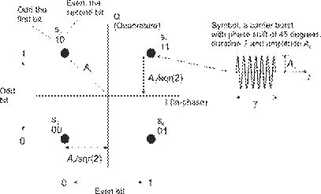
Constellation diagram of QPSK modulation
Each signal point of constellation represents one symbol, a carrier burst, with phase shift of 45, 135, -45 or -135 degrees or, in radians, π/2, 3π/2, - π/2 or -3π/2. Constellation diagram does not show duration T of the burst or symbol, and it must be given separately. When symbol duration T is known, the symbol rate is
r = 1/T Baud [Baud = 1/sec]
QPSK uses four different symbols, one for all possible combination of two bits. Each symbol carry two bits of information and bit rate is two times the symbol rate.
Example: When the carrier amplitude is Ac and symbol duration T = 1μs, the symbol rate r = 1/T = 1 MBaud. To transmit bit values 11, symbol s1 is sent as a 1μs carrier waveform
s1(t) = Ac cos(ωct + π/4)
In QPSK each symbol carries values of two bits and thus its bit rate rb = 2*r. Note that symbols closest to each other are defined to differ only on one bit position. This principle is called Gray-coding and it minimizes bit error rate (BER) because most symbol errors occur between neighbor symbols and now each symbol error usually makes only one bit error.
Each QPSK-symbol consists of in-phase and quadrature carrier components. In constellation diagram I-axis corresponds to in-phase carrier component that is cos(ωct) and Q-axis corresponds to quadrature component that is cos(ωct + π/2) = -sin (ωct). We may split up any carrier waveform to these two components.
Example: Symbol s4 is transmitted as waveform
s4(t) = Ac cos(ωct - π/4).
Using trigonometric identity: cos(a ± b) = cosa cosb sina sinb, we may write:
s4(t) = Ac cos(ωct - π/4) = Ac cos(ωct) cos(-π/4) + Ac sin(ωct) sin (π/4)
Using identity cos(-π/4) = sin (π/4) = 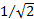, we get
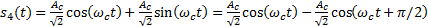.
when we use identity sina = - cos(a +π/2).
We see from the constellation figure and example above that symbol s4 consists of positive in-phase component and negative quadrature component, both with amplitude of .
QPSK Modulator
Constellation diagram above explains also operation of QPSK modulator where bipolar binary data (value for binary 1 and 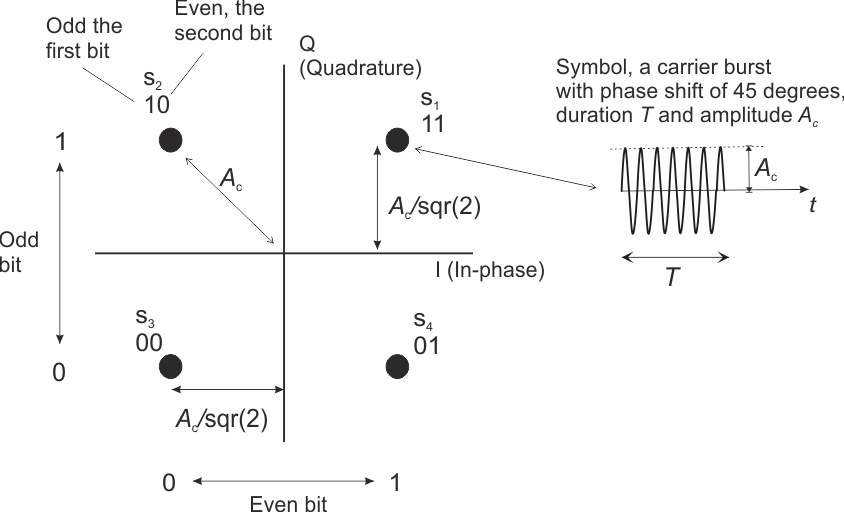 for binary 0) modulates I and Q components of the carrier independently, see figure below. Then modulated carrier components are added to make up complete modulated carrier waveform, a radio burst or symbol. In our example implementation the first bit and all odd numbered bits modulate quadrature component so that at the input of the adder (lower branch in the figure below) it is
for binary 1 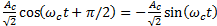
for binary 0 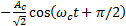 =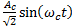
The same way the second and all even numbered bits modulate in-phase carrier wave so that at the input of the adder (upper branch of the figure below)
for binary 1 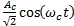
for binary 0 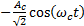
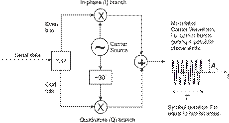
QPSK Modulator
Example:
Assume that the first
bit is 1 and second 0 then signal s2 is transmitted. Now
Serial-Parallel (S/P) sends binary 1, that is value , to lower branch where it multiplies Quadrature carrier waveform
 . To upper branch binary 0, value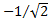, is sent to multiply In- phase carrier . Then at the output of the Adder we will have complete symbol s2
that is:
. To upper branch binary 0, value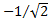, is sent to multiply In- phase carrier . Then at the output of the Adder we will have complete symbol s2
that is:
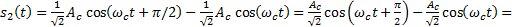
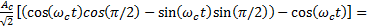
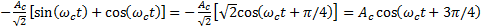
This corresponds signal s2 in the constellation figure above.
QPSK Demodulator and Detector
Synchronous receiver multiplies received QPSK signal with in-phase and quadrature carrier waveform as shown in the figure below. Products are integrated over the symbol period T and in the end of symbol decision is made if received bit from each branch is 1 or 0. If output of the integrator is positive binary 1 is detected, if it is negative binary 0 is detected.
Example: Assume that s2 (10) was transmitted and then the received signal is (see constellation figure)
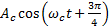. In the upper branch of the receiver below it is multiplied by and then at the input of the upper integrator is:
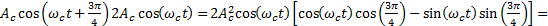 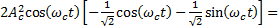
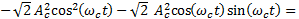
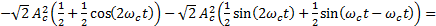
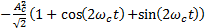
This is input signal of the integrator in the upper branch, when symbol s2 is received.
Integrator behaves as a low pass filter (LPF) taking away high frequency parts (double carrier frequency) of the equation above and its output at the end of the symbol is proportional to the symbol energy.
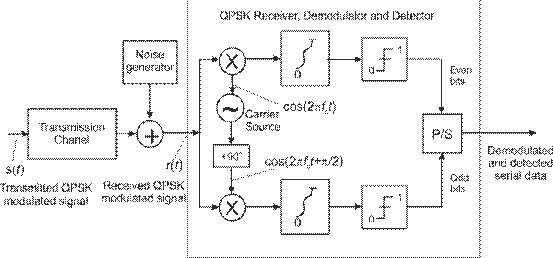
Demodulator and Detector of the QPSK Receiver
Example: Assume that s2 (10) is received and upper integrator input is
Integrator is reset in the beginning of the symbol and its output value becomes
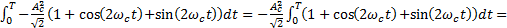
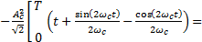
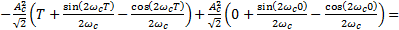
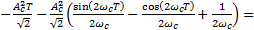
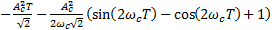
Latter part of the last formula in example above is divided by very large number (4*π*√2*carrier frequency) and it approaches zero. The first term that is proportional to the symbol energy remains and it is clearly negative and binary zero is detected as even bit value.
Example above showed that integrators of the receiver perform low pass filtering and their output values in the end of each symbol are related to the received symbol energy (Ac2T). Decision circuitries after integrator circuits make decision if the binary digit is 1 (positive value) or 0 (negative value). Then integrators are reset for detection of the next symbol.
Noise and Errors
Noise generator in the figure above is a model for all disturbances that occur in the transmission channel. Because of these disturbances errors occur. Bit Error Rate (BER) tells the average number of errors divided by the total number of bits.
Example: If BER = 3*10-9, there are in average 3 errors in each Gbit block of data, i.e. (3 errors)/ (109 bits) = 3*10-9 = BER.
Symbol error rate and, as a consequence, BER depends on signal to noise ratio (S/N). When signal level remains the same, and noise level increases, BER will increase. What is the actual BER at a certain S/N, depends on the transmission method in use.
Generally we can say that the more bits we encode into each symbol the more noise sensitive the system becomes. This we pay for higher bit rate with the same symbol rate. In QPSK we encode 2 bits per symbol and it requires 3 dB higher S/N than BPSK for the same symbol error rate.
{Here we might insert some questions to make sure that theory section was read and understood}
Exercise 1. QPSK Modulator
1.1. Instructions
Build up QPSK-modulator shown in the figure below. You may set data for transmission to random sequence (PRBS) or to 8-bit fixed word. Fixed 8-bit word is set up by push buttons of CU and it is repeated over and over again. Serial-Parallel (S/P) converter splits up data stream so that subsequent bits are transmitted to different branch, first and every odd numbered bit to lower branch and second and all even numbered bits to upper branch. It also encodes data to bipolar form so that binary 1 corresponds to positive and binary 0 to negative voltage.
In our implementation the first and every second bit after that modulate In-phase carrier. The second and even bits modulate the quadrature carrier. QPSK transmits two bits in each symbol and bit values stay the same over whole symbol time. For the next symbol following two bits are taken, one for lower and one for upper branch.
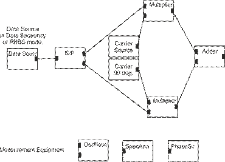
QPSK Modulator of the transmitter
{Text marked as { } are not shown in implemented assignment. They are just notes for implementation.
Selection of random (PRBS) data or 8-bit Data Sequence may be selected by mouse or by push buttons of CU. Bit values selected in CU are shown on screed and/or leds of CU. Carrier source could in final implementation contain two outputs, one for actual carrier and the other one for quadrature carrier}
At which measuring terminal you can see the original digital information data sequence to be transmitted with the help of QPSK modulation?
a) Output of a carrier source b) Output of the upper multiplier c) Output of the Data Source
At which terminal you can see QPSK modulated carrier?
a) Output of the Adder b) Upper output of S/P c) Output of lower multiplier
Set data to random PRBS mode and look at the modulated signal with phasescope. Which characteristic of a carrier wave contains information contain information in QPSK?
a) Amplitude b) Frequency c) Phase Shift
Set data sequence to [b1,…b8] = [10011001]. Note that we usually write this way that is first bit on left, but in the diagram, where data flows from left to right, it is easier to follow if we have first bit on right hand side.
Measure the symbol period T. What is the symbol rate?
a) b) c)
What is the bit rate?
a) b) c)
Set data sequence to [b1,…b8] = [10101010]. This data sequence is transmitted as waveform
a) Ac cos(ωct + 3π/4). b) Ac cos(ωct - π/4) c) Ac cos(ωct + π/4).
What is the modulating level <2> of the in-phase carrier component?
a) + b) - c) 0 V
Set data sequence to [b1,…b8] = [10111011]. This data sequence is transmitted as waveform
a) Ac cos(ωct - π/4)
b) Carrier waveform with alternating phase shift, π/4 and 3π/4
c) Two alternating carrier waveforms Ac cos(ωct - π/4) and Ac cos(ωct - 3π/4)
{If we can change symbol rate, we could study its impact to spectral width. We could also ask again what is the bit rate with a certain symbol rate}
Exercise 2. QPSK Demodulator and Detector
Coherent receiver generates phase and frequency synchronized carrier waveform. The receiver has two branches and in one branch the received signal is multiplied by in-phase carrier component and in the other branch by quadrature carrier component. Then these products are integrated over symbol period T.
Figure below shows QPSK system where receiver is opened up to see its functional nodes. QPSK Mod
{Node QPSK Mod node is a macronode containing all nodes of QPSK modulator in figure above and their controls. In later developments we may double click it and split it up to basic nodes}
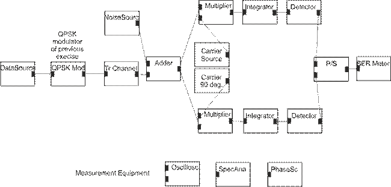
QPSK Demodulator and Detector
1. Which nodes belong to the receiver of the QPSK system? Hint: Compare with QPSK Demodulator and Detector in Background section.
a) Tr Channel b) Data Source c) Integrator
Exercise 3. QPSK System with noise
3.1. Instructions
Figure below shows a complete QPSK system transmitting data Dt via radio path to receiver which detects it as data Dr.
Set transmitted data to random {here it might be the only choice}, noise to minimum and connect one phase scope to see constellation of the transmitted signal and the or to the input of the receiver to see constellation in the receiving end of the system. Which choice is correct?
a) Signal constellations are very different
b) Constellation at the transmitter contains more noise
c) Signal constellations are close to the same
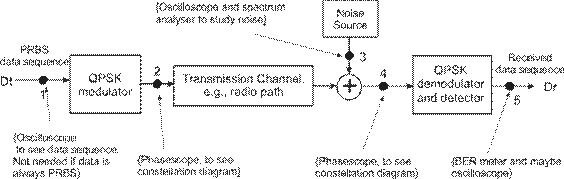
Figure QPSK System with noise
What is the Bit Error Rate?
a) There are no errors
b) BER is very high
c) BER is in the order of 10-3.
Look at noise at <3> and received signal constellation <4>. Increase noise level slowly.
a) b) c)
What happens to BER?
a) b) c)
{If we would have RMS voltmeter, we could measure noise <3> and signal <4> or before adder and compare S/N and BER}
4. Ideas for improvement
In practical 3 data sequence could be fixes and selected by CU. Then oscilloscope would show Dt and Dr and they could be compared.
Symbol rate could be selectable (rotational switch on CU or buttons on screen), then also spectrum could be studied.